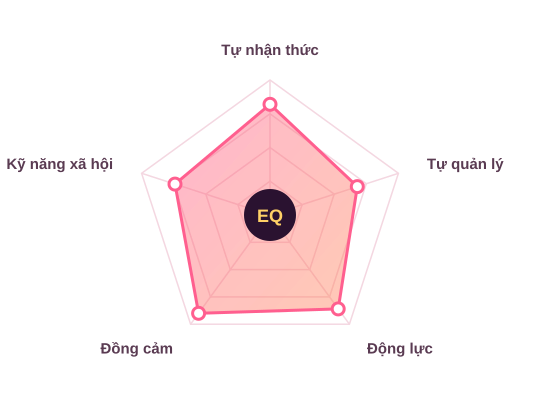

Kiến thức nền
EQ là gì?
EQ, hay Emotional Quotient, là chỉ số thể hiện khả năng cảm nhận, kiểm soát và biểu đạt cảm xúc của một cá nhân. Theo nhà tâm lý học Daniel Goleman, EQ gồm 5 yếu tố cơ bản.

Self-Awareness
Tự nhận thức
Nhận biết cảm xúc của bản thân và hiểu tác động của chúng.
Self-Management
Tự quản lý
Điều tiết cảm xúc, giữ bình tĩnh và phản ứng phù hợp trong mọi tình huống.
Motivation
Động lực
Tự thúc đẩy bản thân, kiên trì hướng tới mục tiêu.
Đồng cảm
Nhận biết và thấu hiểu cảm xúc của người khác.
Bổ sungSocial Skills
Kỹ năng xã hội
Giao tiếp, hợp tác và giải quyết xung đột để xây dựng quan hệ tốt.